| dataset | Mean.x | Std.Dev.x | Mean.y | Std.Dev.y |
|---|---|---|---|---|
| away | 54.26610 | 16.76983 | 47.83472 | 26.93974 |
| bullseye | 54.26873 | 16.76924 | 47.83082 | 26.93573 |
| circle | 54.26732 | 16.76001 | 47.83772 | 26.93004 |
| dino | 54.26327 | 16.76514 | 47.83225 | 26.93540 |
| dots | 54.26030 | 16.76774 | 47.83983 | 26.93019 |
| h_lines | 54.26144 | 16.76590 | 47.83025 | 26.93988 |
| high_lines | 54.26881 | 16.76670 | 47.83545 | 26.94000 |
| slant_down | 54.26785 | 16.76676 | 47.83590 | 26.93610 |
| slant_up | 54.26588 | 16.76885 | 47.83150 | 26.93861 |
| star | 54.26734 | 16.76896 | 47.83955 | 26.93027 |
| v_lines | 54.26993 | 16.76996 | 47.83699 | 26.93768 |
| wide_lines | 54.26692 | 16.77000 | 47.83160 | 26.93790 |
| x_shape | 54.26015 | 16.76996 | 47.83972 | 26.93000 |
All About Squares
Unpacking the Black Box
Robert W. Walker
2026-01-12
–

Black Box Technology
Summary Statistics are Insufficient
Relationships Matter
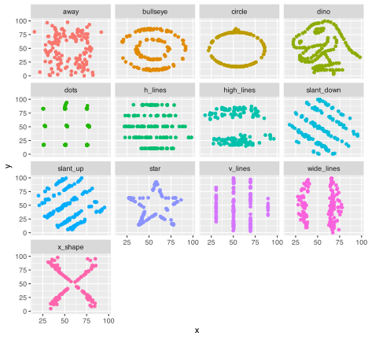
Always Visualize the Data
Models Use Inference to …
Unpack Black Boxes
We will literally do it with boxes/squares
Data and a Library
Pivots Gather/Spread and tidy data
Radiant can be picky about data structures. ggplot is built around the idea of tidy data from Week 2. How do we make data tidy?
At the command line, it is pivot_wider and pivot_longer while radiant uses the [at some point to be obsolete spread/gather]
A Bit on Covariance and Correlation
Covariance is defined as: \sum_{i} (x_{i} - \overline{x})(y_{i} - \overline{y})
Where \overline{x} and \overline{y} are the sample means of x and y. The items in parentheses are deviations from the mean; covariance is the product of those deviations from the mean. The metric of covariance is the product of the metric of x and y; often something for which no baseline exists. For this reason, we use a normalized form of covariance known as correlation, often just \rho.
\rho_{xy} = \sum_{i} \frac{(x_{i} - \overline{x})(y_{i} - \overline{y})}{s_{x}s_{y}}
Correlation is a normed measure; it varies between -1 and 1.
An Oregon Gender Gap
A random sample of salaries in the 1990s for new hires from Oregon DAS. I know nothing about them. It is worth noting that these data represent a protected class by Oregon statute. We have a state file or we can load the data from github.
# A tibble: 16 × 2
Female Male
<dbl> <dbl>
1 41514. 47343.
2 40964. 46382.
3 39170. 45813.
4 37937. 46410.
5 33982. 43796.
6 36077. 43124.
7 39174. 49444.
8 39037. 44806.
9 29132. 44440.
10 36200. 46680.
11 38561. 47337.
12 33248. 47299.
13 33609. 41461.
14 33669. 43598.
15 37806. 43431.
16 35846. 49266. Obs Salary Gender
1 1 41514.39 Female
2 2 40964.07 Female
3 3 39170.19 Female
4 4 37936.57 Female
5 5 33981.78 Female
6 6 36077.27 Female
7 7 39174.06 Female
8 8 39037.37 Female
9 9 29131.75 Female
10 10 36200.45 Female
11 11 38561.40 Female
12 12 33247.92 Female
13 13 33609.49 Female
14 14 33669.22 Female
15 15 37805.83 Female
16 16 35846.13 Female
17 17 47342.66 Male
18 18 46382.39 Male
19 19 45812.91 Male
20 20 46409.66 Male
21 21 43796.05 Male
22 22 43124.02 Male
23 23 49443.82 Male
24 24 44805.79 Male
25 25 44440.32 Male
26 26 46679.59 Male
27 27 47337.10 Male
28 28 47298.73 Male
29 29 41461.05 Male
30 30 43598.29 Male
31 31 43431.18 Male
32 32 49266.41 MaleVisualising Independent Samples
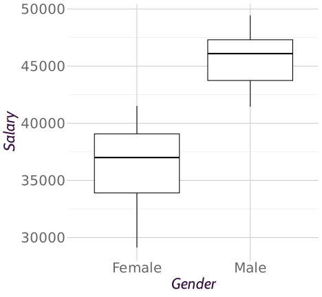Visualising Independent Samples
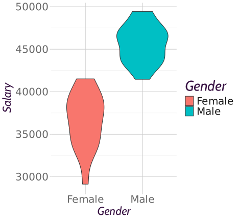About Those Squares: Deviations
The mean of all salaries is 41142.433. Represented in equation form, we have:
Salary_{i} = \alpha + \epsilon_{i}
The i^{th} person’s salary is some average salary \alpha [or perhaps \mu to maintain conceptual continuity] (shown as a solid blue line) plus some idiosyncratic remainder or residual salary for individual i denoted by \epsilon_{i} (shown as a blue arrow). Everything here is measured in dollars.
Salary_{i} = 41142.433 + \epsilon_{i}
# A tibble: 16 × 2
Female[,1] Male[,1]
<dbl> <dbl>
1 372. 6200.
2 -178. 5240.
3 -1972. 4670.
4 -3206. 5267.
5 -7161. 2654.
6 -5065. 1982.
7 -1968. 8301.
8 -2105. 3663.
9 -12011. 3298.
10 -4942. 5537.
11 -2581. 6195.
12 -7895. 6156.
13 -7533. 319.
14 -7473. 2456.
15 -3337. 2289.
16 -5296. 8124.By definition, those vertical distances would/will sum to zero. This sum to zero constraint is what consumes a degree of freedom; it is why the standard deviation has N-1 degrees of freedom. The distance from the point to the line is also shown in blue; that is the observed residual salary. It shows how far that individual’s salary is from the overall average.
Square Them
A Big Black Box
# A tibble: 16 × 2
Female[,1] Male[,1]
<dbl> <dbl>
1 138350. 38442803.
2 31813. 27457097.
3 3889736. 21813358.
4 10277545. 27743644.
5 51274988. 7041698.
6 25655866. 3926692.
7 3874503. 68912991.
8 4431282. 13420200.
9 144256540. 10876058.
10 24423237. 30660131.
11 6661738. 38373872.
12 62323288. 37899934.
13 56745270. 101515.
14 55848872. 6031248.
15 11132919. 5238385.
16 28050778. 65999032. sum(Salary.Deviation.Squared)
1 892955384The Black Box of Salaries
The total area of the black box in the original metric (squared dollars) is: 892955385. The length of each side is the square root of that area, e.g. 29882.36 in dollars.

This square, when averaged by degrees of freedom and called mean square, has a known distribution, \chi^2 if we assume that the deviations, call them errors, are normal.
The \chi^2 distribution
The \chi^2 [chi-squared] distribution can be derived as the sum of k squared Z or standard normal variables. Because they are squares, they are always positive. The k is called degrees of freedom. Differences in \chi^2 also have a \chi^2 distribution with degrees of freedom equal to the difference in degrees of freedom.
As a technical matter (for x > 0): f(x) = \frac{1}{2^{\frac{k}{2}}\Gamma(k/2)} x^{\frac{k}{2-1}}e^{\frac{-x}{2}}
Some language and F
Sum of squares: \sum_{i=1}^{N} e_{i}^{2} Mean square: divide the sum of squares by k degrees of freedom. NB: Take the square root and you get the standard deviation. \frac{1}{k}\sum_{i=1}^{N} e_{i}^{2}
Fisher’s F ratio or the F describes the ratio of two \chi^2 variables (mean square) with numerator and denominator degrees of freedom. It is the ratio of [degrees of freedom] averaged squared errors. As the ratio becomes large, we obtain greater evidence that the two are not the same. Let’s try that here.
The Core Conditional
But all of this stems from the presumption that e_{i} is normal; that is a claim that cannot really be proven or disproven. It is a core assumption that we should try to verify/falsify.
Because the e_{i} being normal means implies that their squares are \chi^2a and further that the ratio of their mean-squares are F.
As an aside, the technical definition of tb is a normal divided by the square root of a \chi^2 so t and F must be equivalent with one degree of freedom in the numerator.
a This is why the various results in prop.test are reported as X-squared.
b I mentioned this fact previously when introducing t (defined by degrees of freedom and with metric standard error.)
Verification of the Normal
- Plots [shape]
- the quantile-quantile plot
- Statistical tests
plots
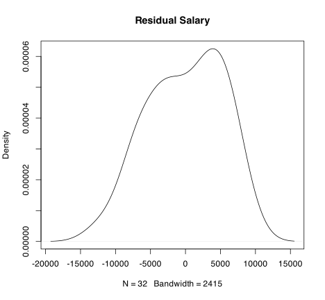the quantile-quantile plot of a normal
The mean of residual salary is zero. The standard deviation is the root-mean-square. Compare observed residual salary [as z] to the hypothetical normal.
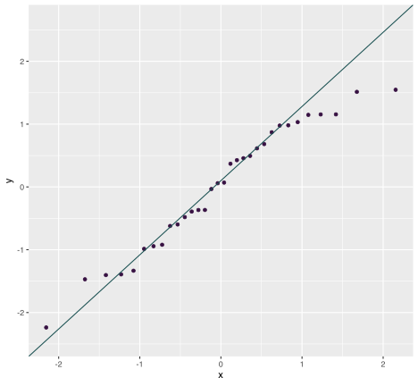
tests
We can examine the claim that residual salary is plausibly normal by examining the slope of the sample and theoretical quantiles: the slope of the q-q plot. This is exactly what the following does under the null hypothesis of a normal.
Shapiro-Wilk normality test
data: lm(Salary ~ 1, data = OregonSalaries)$residuals
W = 0.9591, p-value = 0.2595There are a few others. I personally prefer gvlma.
Linear Models
Will expand on the previous by unpacking the box, reducing residual squares via the inclusion of features, explanatory variables, explanatory factors, exogenous inputs, predictor variables. In this case, let us posit that salary is a function of gender. As an equation, that yields:
Salary_{i} = \alpha + \beta_{1}*Gender_{i} + \epsilon_{i} We want to measure that \beta; in this case, the difference between Male and Female. By default, R will include Female as the constant.
What does the regression imply? That salary for each individual i is a function of a constant and gender. Given the way that R works, \alpha will represent the average for females and \beta will represent the difference between male and female average salaries. The \epsilon will capture the difference between the individual’s salary and the average of their group (the mean of males or females).
A New Residual Sum of Squares
The picture will now have a red line and a black line and the residual/leftover/unexplained salary is now the difference between the point and the respective vertical line (red arrows or black arrows). What is the relationship between the datum and the group mean? The answer is shown in black/red.
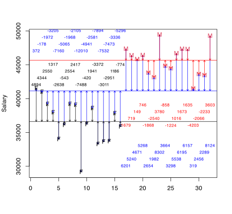
The Squares
The sum of the remaining squared vertical distances is 238621277 and is obtained by squaring each black/red number and summing them. The amount explained by gender [measured in squared dollars] is the difference between the sums of blue and black/red numbers, squared. It is important to notice that the highest paid females and the lowest paid males may have more residual salary given two averages but the different averages, overall, lead to far less residual salary than a single average for all salaries. Indeed, gender alone accounts for:
[1] 654334108Intuitively, Gender should account for 16 times the squared difference between Female and Overall Average (4522) and 16 times the squared difference between Male and Overall Average (4522).
[1] 654334108A Visual: What Proportion is Accounted For?
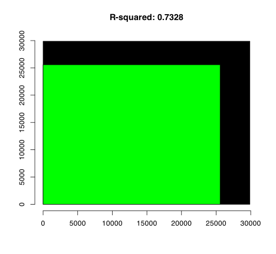Regression Tables
Call:
lm(formula = Salary ~ Gender, data = OregonSalaries)
Residuals:
Min 1Q Median 3Q Max
-7488.7 -2107.9 433.3 1743.9 4893.9
Coefficients:
Estimate Std. Error t value Pr(>|t|)
(Intercept) 36620.5 705.1 51.94 < 2e-16 ***
GenderMale 9043.9 997.1 9.07 0.000000000422 ***
---
Signif. codes: 0 '***' 0.001 '**' 0.01 '*' 0.05 '.' 0.1 ' ' 1
Residual standard error: 2820 on 30 degrees of freedom
Multiple R-squared: 0.7328, Adjusted R-squared: 0.7239
F-statistic: 82.26 on 1 and 30 DF, p-value: 0.0000000004223Analysis of Variance: The Squares
F is the ratio of the two mean squares. It is also t^2.
.small[
Analysis of Variance Table
Response: Salary
Df Sum Sq Mean Sq F value Pr(>F)
Gender 1 654334108 654334108 82.264 0.0000000004223 ***
Residuals 30 238621277 7954043
---
Signif. codes: 0 '***' 0.001 '**' 0.01 '*' 0.05 '.' 0.1 ' ' 1]
The Idea Scales to both Quantitative Variables and Multiple Categories
A Multi-Category Example
Linear regression (OLS)
Data : WH
Response variable : Expenditures
Explanatory variables: Age.Cohort
Null hyp.: the effect of Age.Cohort on Expenditures is zero
Alt. hyp.: the effect of Age.Cohort on Expenditures is not zero
coefficient std.error t.value p.value
(Intercept) 2224.912 330.017 6.742 < .001 ***
Age.Cohort|0 - 5 -839.928 584.850 -1.436 0.151
Age.Cohort|13-17 1710.299 443.488 3.856 < .001 ***
Age.Cohort|18-21 7816.237 458.709 17.040 < .001 ***
Age.Cohort|22-50 38142.650 440.101 86.668 < .001 ***
Age.Cohort|51 + 51042.473 537.290 95.000 < .001 ***
Signif. codes: 0 '***' 0.001 '**' 0.01 '*' 0.05 '.' 0.1 ' ' 1
R-squared: 0.961, Adjusted R-squared: 0.961
F-statistic: 3833.317 df(5,771), p.value < .001
Nr obs: 777
Prediction error (RMSE): 3847.81
Residual st.dev (RSD): 3862.753
Sum of squares:
df SS
Regression 5 285,981,965,641.547
Error 771 11,503,984,347.992
Total 776 297,485,949,989.540
coefficient 2.5% 97.5% +/-
(Intercept) 2224.912 1577.073 2872.751 647.839
Age.Cohort|0 - 5 -839.928 -1988.016 308.160 1148.088
Age.Cohort|13-17 1710.299 839.713 2580.886 870.586
Age.Cohort|18-21 7816.237 6915.771 8716.704 900.467
Age.Cohort|22-50 38142.650 37278.711 39006.589 863.939
Age.Cohort|51 + 51042.473 49987.748 52097.198 1054.725Not Alot Left….
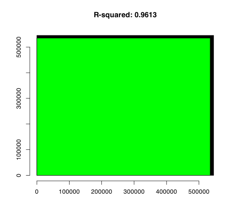Bullseye

bullseye
Messy
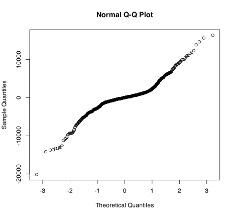What about Ethnicity?
Call:
lm(formula = Expenditures ~ Ethnicity + Age.Cohort, data = WH)
Residuals:
Min 1Q Median 3Q Max
-20075.0 -1206.7 0.1 1202.1 16446.7
Coefficients:
Estimate Std. Error t value Pr(>|t|)
(Intercept) 2359.9 344.7 6.846 1.55e-11 ***
EthnicityWhite not Hispanic -402.1 298.3 -1.348 0.178045
Age.Cohort0 - 5 -849.3 584.6 -1.453 0.146685
Age.Cohort13-17 1733.8 443.6 3.908 0.000101 ***
Age.Cohort18-21 7870.0 460.2 17.101 < 2e-16 ***
Age.Cohort22-50 38311.5 457.4 83.768 < 2e-16 ***
Age.Cohort51 + 51227.2 554.2 92.432 < 2e-16 ***
---
Signif. codes: 0 '***' 0.001 '**' 0.01 '*' 0.05 '.' 0.1 ' ' 1
Residual standard error: 3861 on 770 degrees of freedom
Multiple R-squared: 0.9614, Adjusted R-squared: 0.9611
F-statistic: 3198 on 6 and 770 DF, p-value: < 2.2e-16Confidence Intervals
2.5 % 97.5 %
(Intercept) 1683.2345 3036.6106
EthnicityWhite not Hispanic -987.6405 183.4497
Age.Cohort0 - 5 -1996.8464 298.2797
Age.Cohort13-17 862.9646 2604.5597
Age.Cohort18-21 6966.5797 8773.3519
Age.Cohort22-50 37413.6880 39209.3043
Age.Cohort51 + 50139.2506 52315.1525Comparison
Analysis of Variance Table
Model 1: Expenditures ~ Age.Cohort
Model 2: Expenditures ~ Ethnicity + Age.Cohort
Res.Df RSS Df Sum of Sq F Pr(>F)
1 771 11503984348
2 770 11476899027 1 27085321 1.8172 0.178At the margin, Ethnicity accounts for little variance.
Some Basic Cost Accounting
Total.Cost_{t} = \alpha + \beta*units_t + \epsilon_{t}
With data on per period (t) costs and units produced, we can partition fixed \alpha and variable costs \beta (or cost per unit). Consider the data on Handmade Bags. We want to accomplish two things. First, to measure the two key quantities. Second, be able to predict costs for hypothetical number of units.
A comment on correlation
The Data
| skim_type | skim_variable | n_missing | complete_rate | numeric.mean | numeric.sd | numeric.p0 | numeric.p25 | numeric.p50 | numeric.p75 | numeric.p100 | numeric.hist |
|---|---|---|---|---|---|---|---|---|---|---|---|
| numeric | units | 0 | 1 | 351.967 | 131.665 | 141.00 | 241.5 | 356.00 | 457.0 | 580.00 | ▇▇▆▇▆ |
| numeric | TotCost | 0 | 1 | 19946.865 | 2985.202 | 14357.98 | 17593.8 | 20073.93 | 22415.2 | 24887.83 | ▆▇▇▇▇ |
A Look at the Data
The Thing to Measure
A Linear Model
Call:
lm(formula = TotCost ~ units, data = HMB)
Residuals:
Min 1Q Median 3Q Max
-1606.7 -610.9 -124.8 509.8 2522.3
Coefficients:
Estimate Std. Error t value Pr(>|t|)
(Intercept) 12308.642 323.601 38.04 <2e-16 ***
units 21.702 0.862 25.18 <2e-16 ***
---
Signif. codes: 0 '***' 0.001 '**' 0.01 '*' 0.05 '.' 0.1 ' ' 1
Residual standard error: 871.8 on 58 degrees of freedom
Multiple R-squared: 0.9162, Adjusted R-squared: 0.9147
F-statistic: 633.8 on 1 and 58 DF, p-value: < 2.2e-16Total.Cost_{t} = 12308.64 + 21.70 * units_t + \epsilon_{t} where \epsilon_{t} has a standard deviation of 872 dollars.
fitted.values() or predictions
The line is the fitted values.
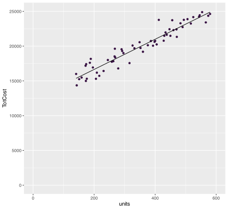Residual Costs?
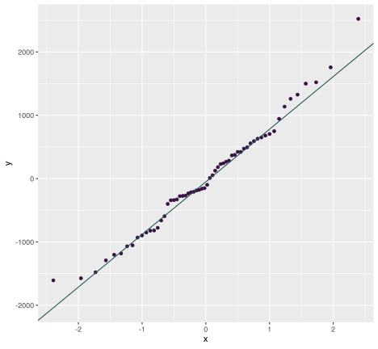Not the Prettiest but the best….
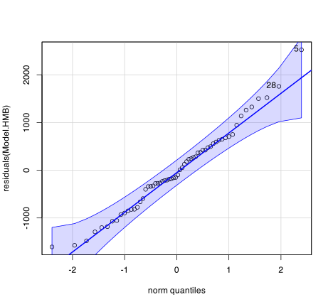Because normal is sustainable, I can ….
- Interpret the table including t and F.
- Utilize confidence intervals for the estimates.
- Predict from the regression of two forms.
- Subject to examinations of other characteristics of the regression.
anova [Sums of squares]
Analysis of Variance Table
Response: TotCost
Df Sum Sq Mean Sq F value Pr(>F)
units 1 481694173 481694173 633.81 < 2.2e-16 ***
Residuals 58 44080089 760002
---
Signif. codes: 0 '***' 0.001 '**' 0.01 '*' 0.05 '.' 0.1 ' ' 1Two types of squares: those a function of units and those residual. Why?

confint confidence intervals
From normal, the slope and intercept have t confidence intervals.
2.5 % 97.5 %
(Intercept) 11660.88464 12956.39966
units 19.97605 23.42705With 95% confidence, fixed costs range from 11660.88 to 12956.40 dollars per period and the variable costs range from 19.976 to 23.427 dollars per unit. If the goal is to attain 20 dollars per unit, we cannot rule that out [though a 95 percent lower bound would].
5 % 95 %
(Intercept) 11767.72623 12849.55807
units 20.26066 23.14245Plots
Predicting Costs
Average Costs interval="confidence"
fit lwr upr
1 16648.95 16303.25 16994.66
2 17734.03 17448.18 18019.88
3 18819.11 18576.63 19061.58All Costs interval="prediction"
fit lwr upr
1 16648.95 14869.98 18427.92
2 17734.03 15965.71 19502.35
3 18819.11 17057.28 20580.93Diminshing Marginal Cost?
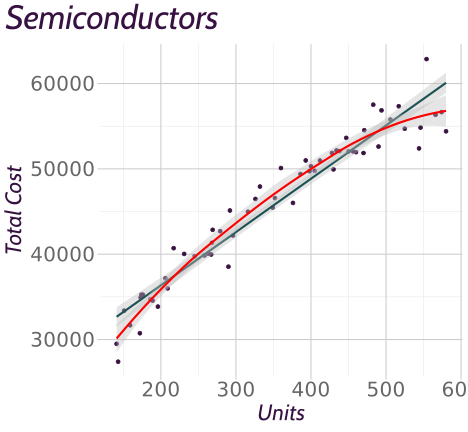Residuals
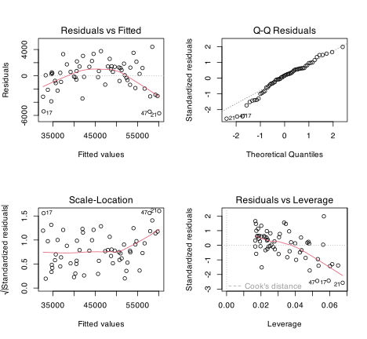Residuals
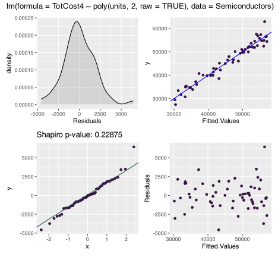Comparing Squares
Analysis of Variance Table
Model 1: TotCost4 ~ units
Model 2: TotCost4 ~ poly(units, 2, raw = TRUE)
Res.Df RSS Df Sum of Sq F Pr(>F)
1 58 304149603
2 57 203027172 1 101122431 28.39 0.000001757 ***
---
Signif. codes: 0 '***' 0.001 '**' 0.01 '*' 0.05 '.' 0.1 ' ' 1Lines?
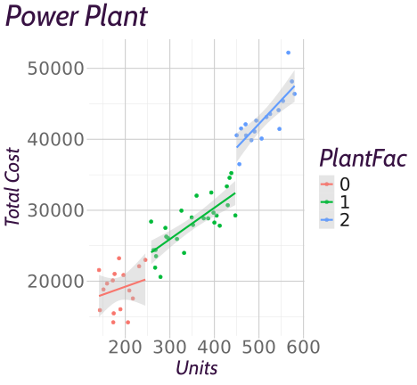Comparison
test or anova
Analysis of Variance Table
Model 1: TotCost3 ~ units
Model 2: TotCost3 ~ units:PlantFac
Res.Df RSS Df Sum of Sq F Pr(>F)
1 58 585943761
2 56 348638405 2 237305356 19.059 0.0000004859 ***
---
Signif. codes: 0 '***' 0.001 '**' 0.01 '*' 0.05 '.' 0.1 ' ' 1Analysis of Variance Table
Model 1: TotCost3 ~ units:PlantFac
Model 2: TotCost3 ~ PlantFac * units
Res.Df RSS Df Sum of Sq F Pr(>F)
1 56 348638405
2 54 345221354 2 3417052 0.2672 0.7665The Premier League
Call:
lm(formula = Points ~ Wage.Bill.milGBP, data = EPL)
Residuals:
Min 1Q Median 3Q Max
-12.569 -3.201 0.353 3.712 11.129
Coefficients:
Estimate Std. Error t value Pr(>|t|)
(Intercept) 32.11589 2.74905 11.683 0.000000000776 ***
Wage.Bill.milGBP 0.24023 0.02987 8.042 0.000000227415 ***
---
Signif. codes: 0 '***' 0.001 '**' 0.01 '*' 0.05 '.' 0.1 ' ' 1
Residual standard error: 6.438 on 18 degrees of freedom
Multiple R-squared: 0.7823, Adjusted R-squared: 0.7702
F-statistic: 64.67 on 1 and 18 DF, p-value: 0.0000002274Points = 32.12 + 0.24*Wage.Bill + \epsilon
Not Unreasonable
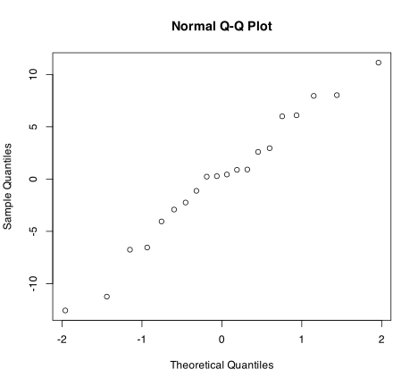Residuals
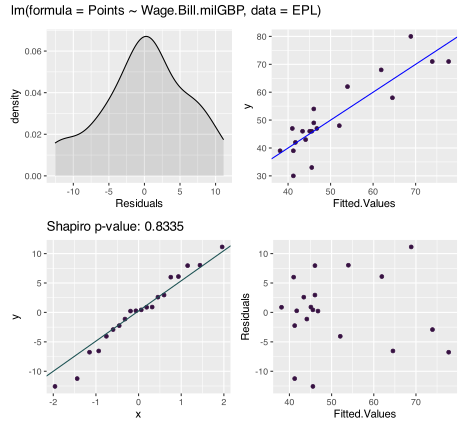Predicting Points
fit lwr upr
1 32.11589 26.34036 37.89143
2 34.51820 29.26702 39.76939
3 36.92051 32.16859 41.67244
4 39.32282 35.03629 43.60936
5 41.72513 37.85788 45.59239
6 44.12744 40.61679 47.63809
7 46.52975 43.29225 49.76725
8 48.93206 45.86190 52.00222
9 51.33437 48.30814 54.36060
10 53.73668 50.62574 56.84762Some Concluding Remarks
- It’s all about squares. But really, it’s all about normals.
- Assessing normality is crucial to inference in linear models. But we cannot really know whether or not it holds. But if it does:
- Slopes and intercepts are
t, as are their confidence intervals.
- Sums of squares have ratios defined by
F.
- Predictions have
taverages andnormalintervals.
- All founded upon the sum of squared errors being \chi^2.
- Slopes and intercepts are
- This core idea of explaining variance or unpacking a black box is the core question to virtually all machine learning and modelling.
- The capital asset pricing model.

DADM PDX 2025: Regression